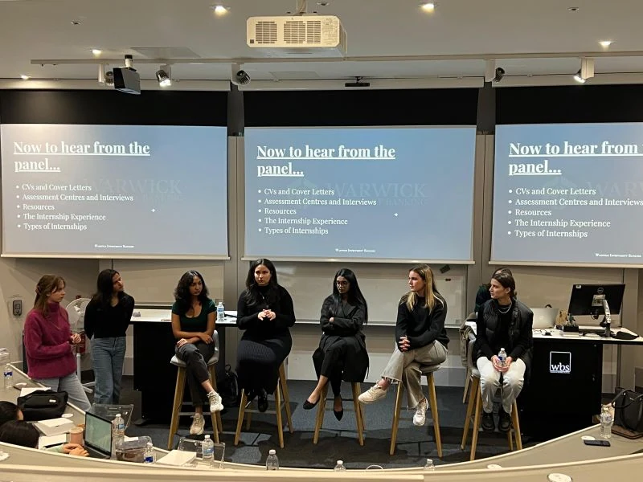
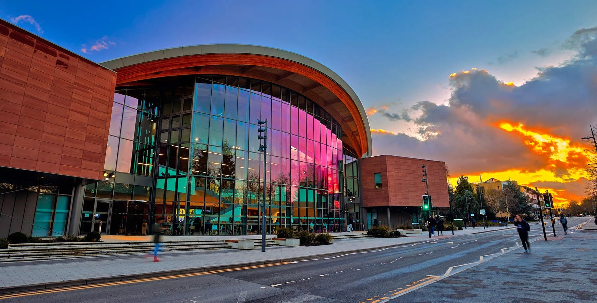
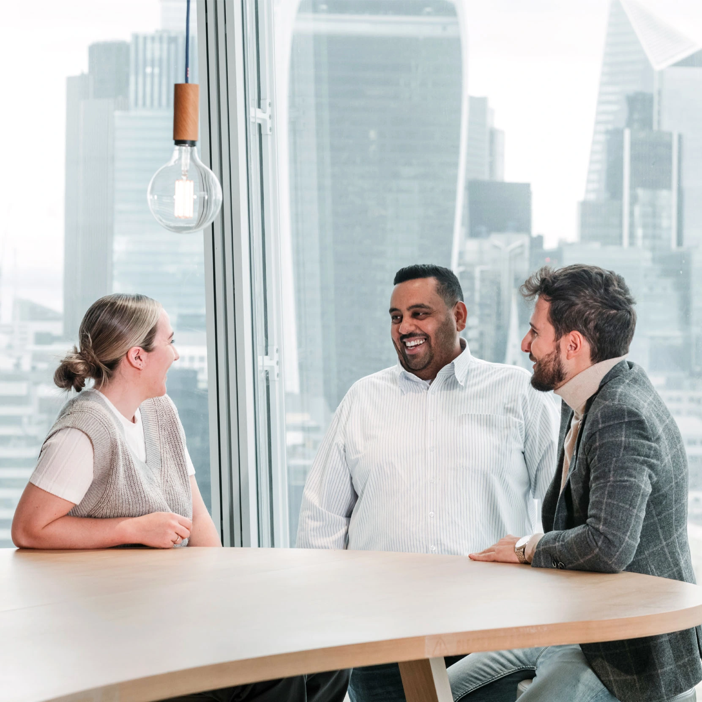

Intro to Investment Banking
Past event
University of Warwick
Talks, technical workshops and careers support for Warwick students.
WBS London, The Shard
Warwick Investment Banking brings together students interested in the industry. Through speaker sessions, practical workshops and student-led research, we help members understand investment banking and prepare for applications.
Explore our events
WIB internship panel · 2023

Our people · 2026/27
The students organising WIB’s events, research and careers support this year.
Meet our peopleUniversity of Warwick

Careers resources
Explore application guidance, financial modelling training and career opportunities through the society’s selected resources.
Explore resources